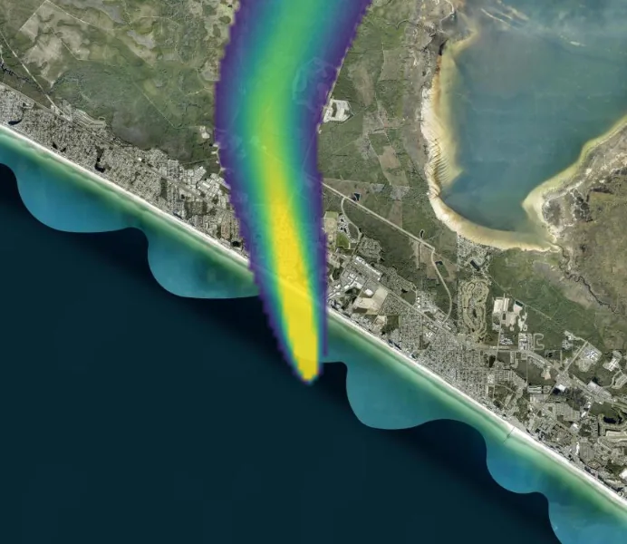

See it run
Two worked demonstrations, each read back off its own recording. One asks what a decision costs; the other asks whether the engine can be trusted to answer.

Hoover Dam, both ways
A GPU flood simulation over real SRTM terrain runs to epoch 54 and is paused mid-event, then forked in place. One decision is overridden in the branch — release rate, ten times higher — and the ledger conserves water across the split.
Read the showcase →
The plume that checks its own math
A conserved scalar carried on a wind while it spreads, held against the closed-form Gaussian solutions and reported to the decimal — then taken to a coastal what-if where one anchor becomes six worlds in a single recording.
Read the showcase →